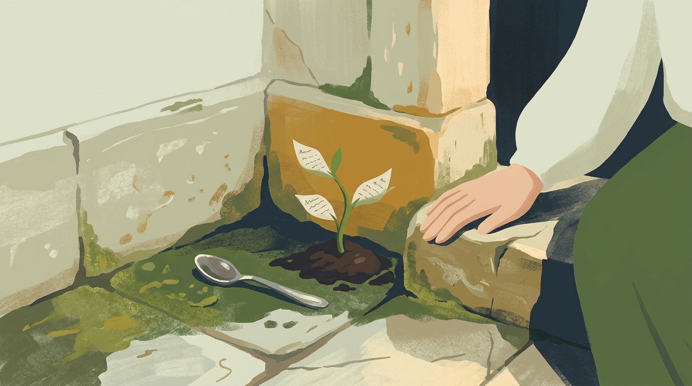

She dug a small hole with a spoon and dropped the seed in. Nothing happened. She watered it, and still nothing happened. It was only when she sat beside it and said, out loud and a little embarrassed, "I'm listening," that the soil shifted.
A green shoot rose, and on its first leaf, in tiny handwriting, was a word: remember. By evening there were three leaves and three words, and by the next morning the words had begun to form a line.

Lina realised the tree did not grow on water. It grew on attention. Every time she read a leaf carefully, another one unfolded.